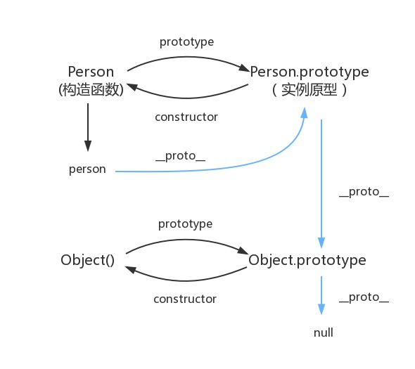

前端第六次上课
复习基础
基本类型
xxxxxxxxxxBooleanNullString UndefinedObject Symbol(es6)操作符
xxxxxxxxxx一元操作符位操作符布尔操作符加减乘除 语句
xxxxxxxxxxifdo whilewhileforfor inbreakcontinue switch函数
xxxxxxxxxx普通函数构造函数函数方法引用类型和基本类型
xxxxxxxxxx后面讲DOM
xxxxxxxxxxvar xxx = document.querySelector("xxxxx")BOM
xxxxxxxxxxclientWidthclientHeight 事件
xxxxxxxxxxclick mouseovermouseoutmouseinAjax
补充知识点
原型链
三个属性
- prototype
- __proto__
- constructor
原型与实例
xxxxxxxxxxfunction Person(name,age) {this.name = namethis.age = age}Person.prototype.sayName = function() {console.log(this.name)}var llp = new Person("llp",21)console.log(llp)原型链是什么? //下面解释
为什么数组有数组方法？//写例子
送一张图啊

作用域
执行上下文
例子
xxxxxxxxxx//例子1var demo = function() {console.log(1)}demo()function demo() {console.log(2)}demo()//例子2function demo() {console.log(1)}demo()function demo() {console.log(2)}demo()执行上下文栈
什么是栈?
例子
xxxxxxxxxxfunction foo1() {console.log(1)}function foo2() {foo1()console.log(2)}function foo3() {foo2()console.log(3)}foo3()console.log(4)上一个例子发生了什么
xxxxxxxxxx// 创建一个Stack(栈)// 开始入栈Stack.push(globalContext) //全局执行上下文入栈//当调用foo3时Stack.push(foo3Context) //foo3的执行上下文入栈//调用foo2时Stack.push(foo2Context) //foo2的执行上下文入栈//调用foo3时Stack.push(foo1Context) //foo1的执行上下文入栈//入栈结束//此时 Stack = [globalContext,foo3Context,foo2Context,foo1Context]//出栈开始Stack.pop() // 执行 foo1,foo1Context 出栈Stack.pop() // 执行 foo2,foo2Context 出栈Stack.pop() // 执行 foo3,foo3Context 出栈//注意 globalContext永远存在，不用出栈活学活用,简单小测验
xxxxxxxxxxfunction foo1() {console.log(1)}function foo2() {console.log(2)foo1()console.log(3)}function foo3() {foo2()console.log(4)}foo3()console.log(5)
变量对象
全局对象(window)
函数执行的过程
进入执行上下文
- 创建变量对象(activation object, AO)
代码执行
- 初始化变量对象
例子
xxxxxxxxxxfunction foo(a) {var b = 2function c() {}var d = function() {}b = 3}foo(1)//执行上下文入栈Stack.push(fooContext)//进入执行上下文var OA = {arguments: {0: 1,length: 1},a: 1,b: undefined,c: undefined,d: undefined,}//代码执行OA = {arguments: {0: 1,length: 1},a: 1,b: 2,c: reference to function c(){},d: reference to FunctionExpression "d",}
小测验
xxxxxxxxxxfunction foo() {console.log(a)a = 10}function foo() {a = 10console.log(a)}
作用域链
当查找变量的时候，会先从当前上下文的变量对象中查找，如果没有找到，就会从父级(词法层面上的父级)执行上下文的变量对象中查找，一直找到全局上下文的变量对象，也就是全局对象。这样由多个执行上下文的变量对象构成的链表就叫做作用域链。
xxxxxxxxxxfunction foo() {var a = 100function bar() {var b = 20console.log(a)}bar()}foo()为什么bar能访问foo中的变量?
每个函数在创建时都会创建自己的作用域链(scope对象)
全局scope，没有 到顶了
foo的scope = [globalContext]
bar的scope = [fooContext,...fooContext,……] //一直往上找
典型问题(闭包)
xxxxxxxxxxfor(var i = 0; i < 5; i++) {setTimeout(function() {console.log(i)},1000)}for(var i = 0; i < 5; i++) {setTimeout(function(i) {return function xx() {console.log(i)}}(i),1000)}//原因// 第二个function的scope增加了一个匿名函数,而不是全局对象// 第一个的scope = [glocalContext]// 第二个function的scope = [匿名函数的scope,globalscope]
垃圾回收机制
参数的传递
按值传递
xxxxxxxxxxvar name = "zzx"function changeName(_name) {_name = "sb"}changeName(name)console.log(name)引用传递
xxxxxxxxxxvar zzx = {name: "zzx"}function changeName(person) {person.name = "sb"}changeName(zzx)console.log(zzx)第三种传递
xxxxxxxxxxvar zzx = {name: "zzx"}function changePerson(person) {person = 123}changePerson(zzx)console.log(zzx)传递的本质
拷贝参数
xxxxxxxxxx//基本类型 => 传值 栈内存_name = name//引用类型 => 传址 堆内存person和zzx共享空间
上面问题就解决了
常用的方法补充
数组的方法
xxxxxxxxxxmapforEachentriesfilterjoinpushshift&&unshiftsortreverse concatslice splice indexOf lastIndexOffiltersomeeveryreducesplit实战
xxxxxxxxxxvar p1 = [{name: "zzx",age: 21,money: 1000}, {name: "kjj",age: 20,money: 1000}, {name: "xc",age: 19,money: 1000}, {name: "llp",age: 22,money: 1000}]var p2 = [{name: "zzx",hobby: "sleep"}, {name: "kjj",hobby: "study"}, {name: "xc",hobby: "study"}, {name: "llp",hobby: "study"}]//获取喜欢学习，并且年龄大于等于20的同学，给他们100元
正则(常见操作)
xxxxxxxxxxString.prototype.replace(reg,"zzzz")String.prototype.search(reg) 返回indexString.prototype.match(reg) 返回匹配的数组RegExp.prototype.test(str)RegExp.prototype.exec(str) 返回值为数组等信息//. * ? + () $1 [] | ^ $ \b \B \d \D \w \W git
xxxxxxxxxxgit add .git branch git checkout -bgit checkout git loggit pullgit diffgit commit git push
nodejs第一课
https://www.kancloud.cn/kancloud/seven-days-nodejs/43580
具体的自己下去看一下啊... 时间不多，带你们走一遍简单api，学习更多是靠自己...
什么是node
JS是脚本语言，脚本语言都需要一个解析器才能运行。对于写在HTML页面里的JS，浏览器充当了解析器的角色。而对于需要独立运行的JS，NodeJS就是一个解析器。
每一种解析器都是一个运行环境，不但允许JS定义各种数据结构，进行各种计算，还允许JS使用运行环境提供的内置对象和方法做一些事情。例如运行在浏览器中的JS的用途是操作DOM，浏览器就提供了
document之类的内置对象。而运行在NodeJS中的JS的用途是操作磁盘文件或搭建HTTP服务器，NodeJS就相应提供了fs、http等内置对象。
作用
NodeJS让前端众如获神器，终于可以让自己的能力覆盖范围跳出浏览器窗口，更大批的前端工具如雨后春笋。因此，对于前端而言，虽然不是人人都要拿NodeJS写一个服务器程序，但简单可至使用命令交互模式调试JS代码片段，复杂可至编写工具提升工作效率,简而言之就是让前端也能写后端...
安装
自己去看... 时间不多,这个不会我就... https://nodejs.org/en/download/
npm
npm 是一个包管理软件,可以去第三方网站下载自己的包
npm installl ....
相对路径和绝对路径
不必多说吧....
nodejs包的加载
内置模块(fs,http....),路径...
nodejs常用的包和api
fs
- fs.readFile(url,encode,callback)
- fs.readFileSync(url,encode)
- fs.writeFile(url,data,encode,callback)
- fs.writeFileSync(url,data,encode)
- fs.mkdir(url,callback)
- fs.mkdirSync(url)
- fs.unLink(url,callback)
- fs.unLinkSync(url)
- fs.readdirSync()
- ....
http
- http.createServer(function(req,res){}).listen
- http.request
- http.get
- req.headers
- req.on("data",function() {})
- req.on("end",function() {})
参数解析
- url.parse()
- querystring.parse()
...剩下的自己下去了解吧，课不多了，node要自己下去学啊，暑假可能会用到哦...
homework
level1
1.写一个原生的call2函数,具有一下功能
xxxxxxxxxxfunction sayInfo(age) { console.log("name:"+this.name) console.log("age:"+age)}var user = { name: "zzx"}sayInfo.call2(user,100)//name:zzx//age:100level2
写一个柯里化函数addSum，具有一下功能
xxxxxxxxxxvar x = addSum(1,2)//x 3//x(3) 6//x(8) 14这次作业比较简单,希望大家下去好好预习,马上要考核了,emmmmm,大家加油